Datumfuncties in MySQL#
SQL datum- en tijdfuncties#
Het rekenen met datums en tijden in SQL is vrij complex, met aparte “INTERVAL” waarden. Er zijn ontzettend veel mogelijkheden met datumfuncties. Een overzicht vind je hier:
https://dev.mysql.com/doc/refman/5.5/en/date-and-time-functions.html
Hieronder geven we de MySQL voorbeelden.
Sysdate#
Met SYSDATE() haal je de systeemdatum op, de datum van vandaag. Hetzelfde bereik je min of meer met NOW(), LOCALTIME of LOCALTIMESTAMP. Er zijn subtiele verschillen.
SELECT SYSDATE(), NOW(), LOCALTIME, LOCALTIMESTAMP;
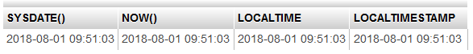
Day#
Met DAY() haal je het nummer van de dag op van een datum.
SELECT last_name, hire_date, DAY(hire_date)
FROM employees
WHERE last_name = 'King';
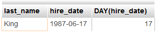
Als je de naam van de dag wil, dan gebruik je DAYNAME().
SELECT last_name, hire_date, DAYNAME(hire_date)
FROM employees
WHERE last_name = 'King';
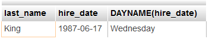
Month#
Met MONTH() haal je het nummer van de maand op van een datum.
SELECT last_name, hire_date, MONTH(hire_date)
FROM employees
WHERE last_name = 'King';
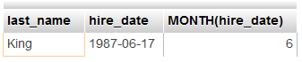
Als je de naam van de maand wil, dan gebruik je MONTHNAME.
SELECT last_name, hire_date, MONTHNAME(hire_date)
FROM employees
WHERE last_name = 'King';

Year#
Met YEAR() haal je het jaar op van een datum.
SELECT last_name, hire_date, YEAR(hire_date)
FROM employees
WHERE last_name = 'King';
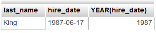
Op deze manier kun je datums van elkaar aftrekken. Bij jaren wordt dan de uitkomst naar beneden afgerond.
SELECT last_name, YEAR(hire_date), YEAR(NOW()), YEAR(NOW())-YEAR(hire_date) AS dienstjaren
FROM employees
WHERE last_name = 'King';
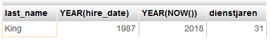
Date_add#
Met DATE_ADD kun je dagen, maanden of jaren toevoegen aan een datum. Met INTERVAL geef je aan wat en hoeveel je wil toevoegen. In onderstaande voorbeelden wordt achtereenvolgens 6 dagen, 6 maanden en 6 jaar toegevoegd aan de hire_date.
SELECT last_name, hire_date, DATE_ADD(hire_date, INTERVAL 6 DAY)
FROM employees
WHERE last_name = 'King';
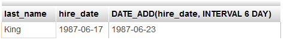
SELECT last_name, hire_date, DATE_ADD(hire_date, INTERVAL 6 MONTH)
FROM employees
WHERE last_name = 'King';
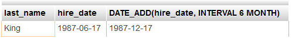
SELECT last_name, hire_date, DATE_ADD(hire_date, INTERVAL 6 YEAR)
FROM employees
WHERE last_name = 'King';
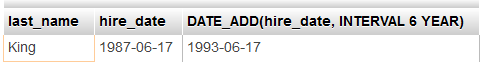
Timestampdiff#
Met TIMESTAMPDIFF() kun je het verschil tussen twee datums uitrekenen, bijvoorbeeld in jaren of maanden.
SELECT last_name, hire_date, TIMESTAMPDIFF(YEAR, hire_date, SYSDATE())
FROM employees
WHERE last_name = 'King';
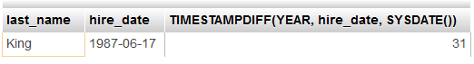
SELECT last_name, hire_date, TIMESTAMPDIFF(MONTH, hire_date, SYSDATE())
FROM employees
WHERE last_name = 'King';
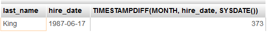
Date_format#
Datumvelden kun je op allerlei mogelijke manieren vormgeven met DATE_FORMAT(). Een overzicht van alle mogelijkheden vind je hier:
https://dev.mysql.com/doc/refman/5.5/en/date-and-time-functions.html#function_date-format
SELECT last_name, hire_date, DATE_FORMAT(hire_date, '%d %M %Y')
FROM employees
WHERE last_name = 'King';

Als je de uitvoer in het Nederlands wil, dan kun je met een SET de local time name op Nederlands zetten. In dit voorbeeld zie je dan juni in het Nederlands in plaats van June in het Engels. Let op dat er op het eind van de SET een puntkomma staat! Het zijn dus eigenljk twee commando’s achter elkaar. Je kunt de SET regel ook los invoeren en dan werkt de instelling zolang je in dezelfde sessie bent. Als je de beheerder zou zijn van de database, dan kun je deze SET vastleggen zodat je altijd de uitvoer in het Nederlands hebt.
SET lc_time_names = 'nl_NL';
SELECT last_name, hire_date, DATE_FORMAT(hire_date, '%d %M %Y')
FROM employees
WHERE last_name = 'King';
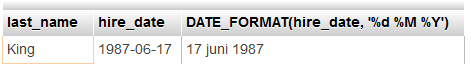